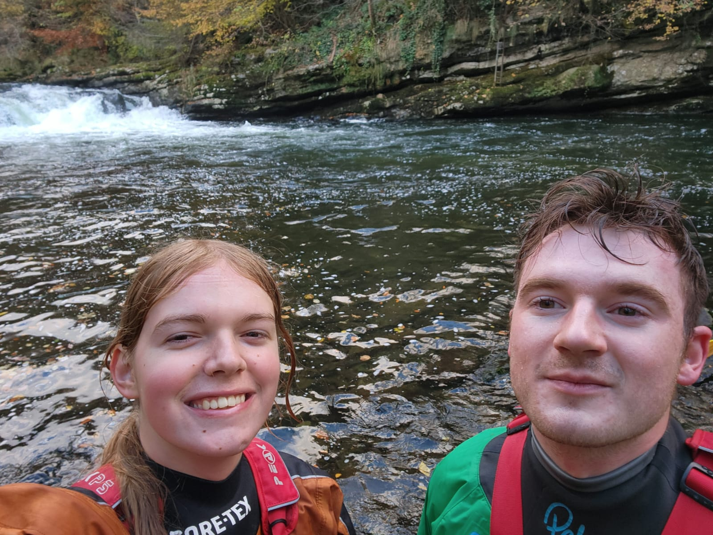
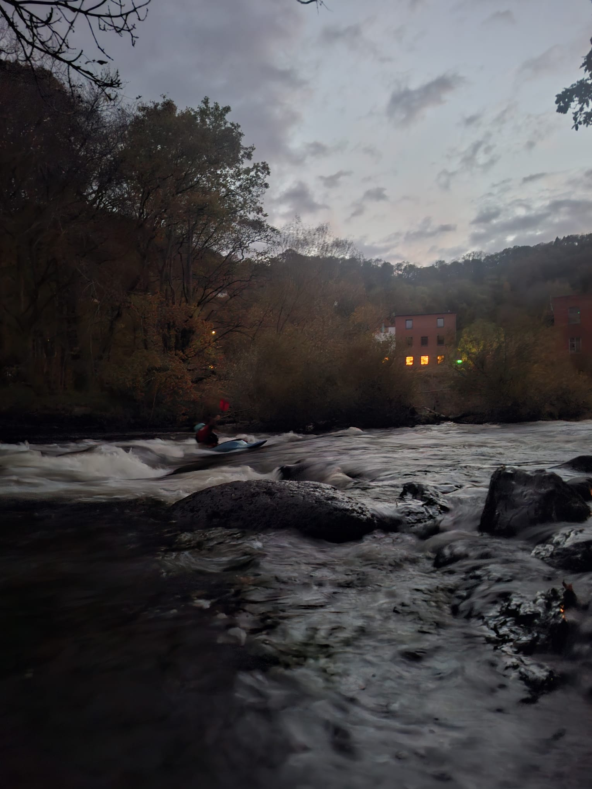
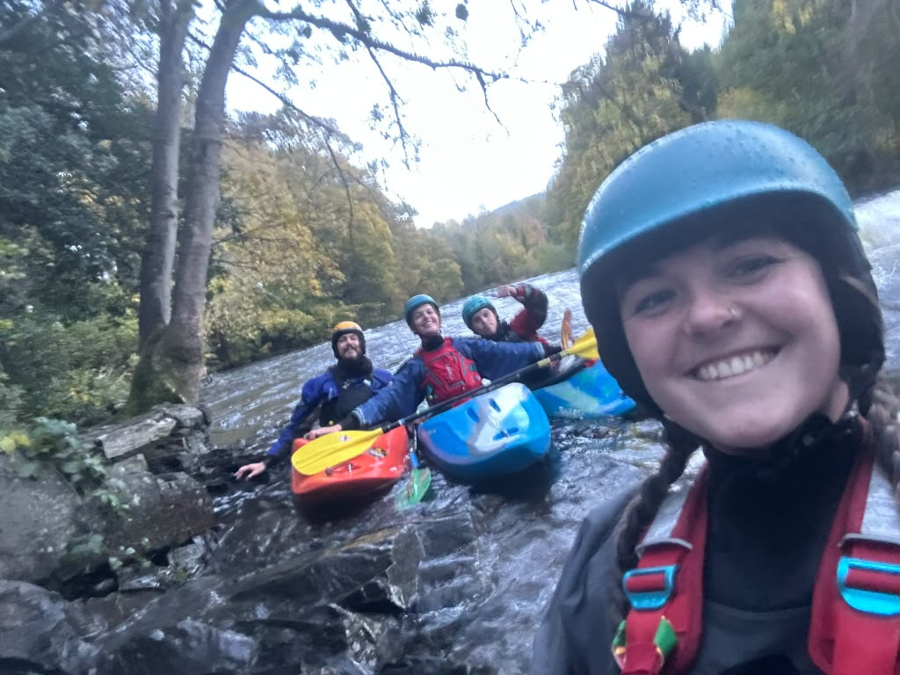
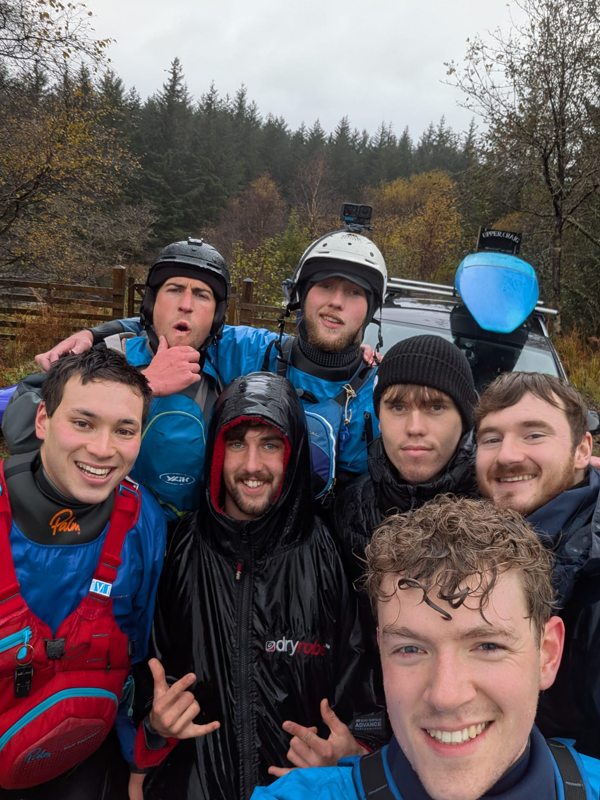
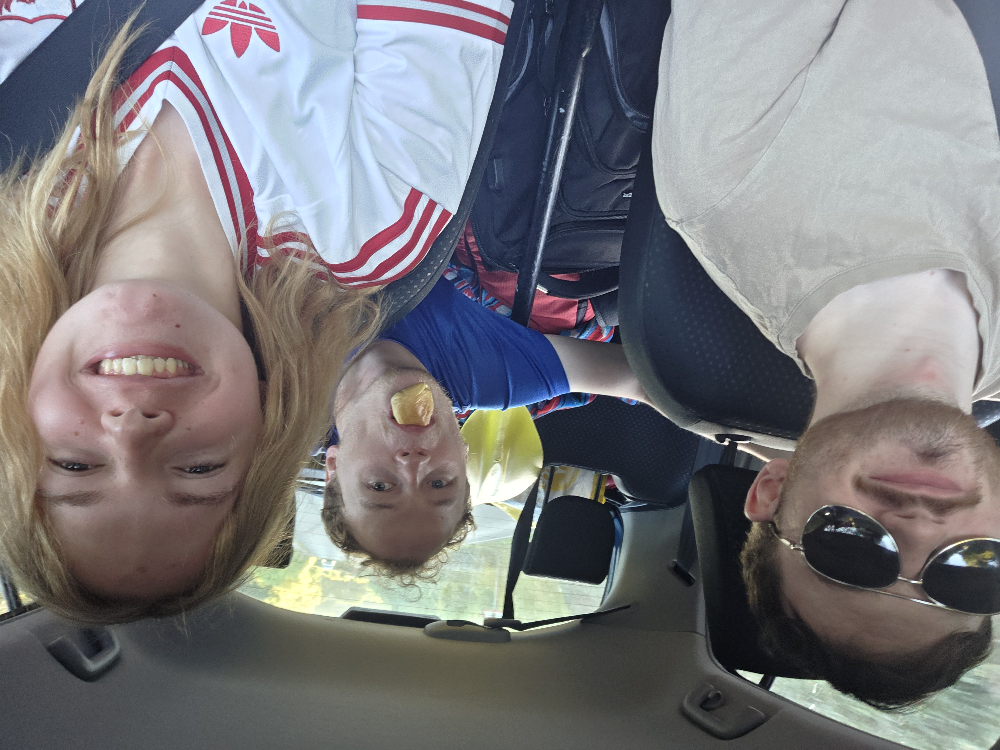
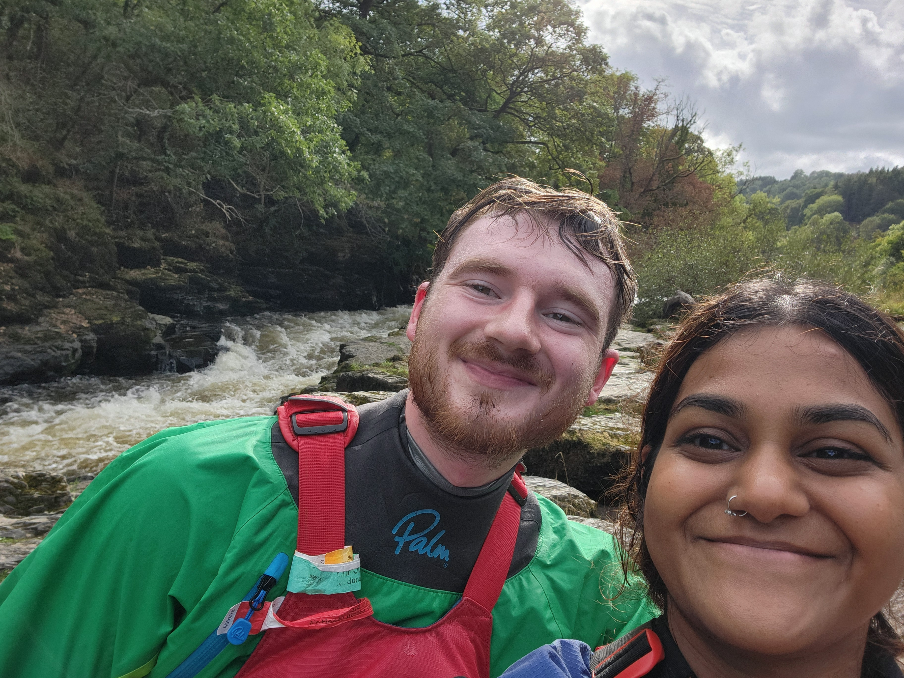

06/11/26: The Kent

Everyones favourite river the Kent! Went with 2 paddles but came back with 3 and you know what they say "Post on Facebook to a kayak sale chat to ask if anyone's lost one and if they haven't claimed it in 3 weeks its yours". Also Bonfire night and olly locking a child in a freezer.
05/11/26: River Dee, Mile End Mill

Roguestate goes surfing! Good few hours on mile end mill before dark with no issues with getting boats to the car this time, the same cannot be said with everyone's shoes fitting them while inside the kayak. First full drysuit squad of the rouguestate!
29/10/26: River Dee

Everyone's first 0.9 dee! Olly showed off his sick leadership skills and everyone smashed down serpents! Honourable mention to recoverygate which occurred due to silly miss communication
28/10/26: Scotland

Scotland during two amber weather warnings. Highlights were the Coe gorge and getting eaten on right angle. It was inspiring to be with some world class paddlers so thanks to Fin, Charlie, Eddie, Paul, David, Ethan, Ollie for a great trip. Will certainly be back for the Orchy soon......
03/10/26: River Conwy, North Wales

Good day out with very nice weather. Only one rapid required safety being set, and one portage (for all but Joe and Toby)
13/09/26: River Dee, North Wales

The first paddle of the roguestate's trip log! Took my lovely girlfriend Chris for her first Dee lap (2nd time on a river). She was a bit scared and scowling at me at the start so we skipped serpents but after that she nailed every rapid and only swam once after getting flipped by a random rock. Good paddle tho and hopefully the first of many...